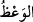
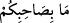
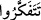

53. Halbuki daha önce onu (hakkı) inkâr etmişlerdi. Uzak bir yerden gayb
hakkında atıp tutuyorlardı.
54. Artık, bundan önce benzerlerine yapıldığı gibi, kendileriyle arzu ettikleri şey
arasına perde çekilmiştir. Şüphesiz onlar, kendilerini endişeye düşüren bir korku
içindeydiler.
“(Rasûlüm! Onlara) de ki: “Size bir tek öğüt vereceğim:” Yâni sizi ancak bir tek
hasletle irşâd edecek ve size nasihat edeceğim:
“
(vaaz)” korkutmayla birlikte yapılan icbar ve îkazdır. Halîl der ki: “Vaaz kalbi
yumuşatacak konularda hayrı hatırlatmaktır.”
“Allah için” tartışma, gösteriş ve taklid için değil Allah rızası için “ikişer ikişer ve
teker teker” dağılarak Rasûlullah (s.a.)’in meclisinden “kalkın” ve O’nun huzurundaki
toplantınızdan dağılın. Bu mânâya göre kıyam, oturmanın zıddı olarak ayakları üzere
durmak, ayağa kalkmak demektir. Kıyâm’ın emri yerine getirmek ve Hakk’ın talebine
ihtimam göstermek mânâsına olması da mümkündür.
“Sonra da” Hz. Peygamber (s.a.)’in durumunu “düşünün.” Tefekkür, kalb ile mânâyı
taleb etmek/aramaktır.
Böyle yapınca bileceksiniz ki “Arkadaşınızda” Rasûlullah (s.a.)’de sizin
zannettiğiniz gibi onu bütün insanlara ve cinlere peygamber olduğunu iddiâ etmeye sevk
edecek “hiçbir delilik yoktur!”
Burada kalkıp düşünme işini, ikişer ikişer ve teker teker diye sınırlamanın faydası
şudur: İki kişi Allah’a ilticâ edip insafla hakkı taleb ederek araştırırlarsa hakka vâsıl
olurlar. Tek kişi de böyledir. O da hevâ ve hevesten uzak durarak şöyle yalnız tek başına
derinden bir düşünürse o da hakkı bulur. Fakat kalabalık topluluk böyle değildir. Çünkü
çoğunlukla onlarda insaf az, ihtilaf çok olur. Gazap ve öfke tozları havada uçuşur. Ancak
kendi görüşüne destek sesleri duyulur.
“İkişer ikişer” ifâdesinin öne alınmasında onun gönül huzûruna daha uygun ve yakın
olduğu bildirilmektedir. Çünkü iki kişi, hevâ ve taassup olmaksızın Rasûlullah (s.a.)’in
durumu ve peygamberliğinin sıhhati hakkında müşâverede bulunmak üzere oturur, her
biri düşüncesinin netîcesini diğerine arz ederse, bu doğru düşünce onları tasdîke
götürür. İlim üzerine ilim hâsıl olur. Bunlar da hakka vâsıl olurlar.
Allah müellifinin sırrını takdis etsin, el-Fütûhâtü’l-Mekkiyye’de der ki: “Bir tek
(vâhide)” bir vâizin ya gayret-i dîniyye ile ya da tâ’zim kasdıyla Allah için kıyam
etmesidir. “İkişer ikişer” Allah ve Rasûlü ile kâim olmaktır. Çünkü Rasûl’e itâat eden
Allah’a da itâat etmiştir. İşte bu makamın sâhibi, nefsin hevâsı, kevnî bir ta’zim veya
nefsânî bir gayretle değil, Allah’ın kitabı ve Rasûlü’nün sünneti ile kâim olur. “Teker
teker” sözü, yalnız Allah ile veya yalnız Allah’ın Rasûlü ile kâim olmaktır.”
“
” ifâdesi mahzuf bir kelimeye bağlanırsa o zaman “
” da vakf yapılmaz.